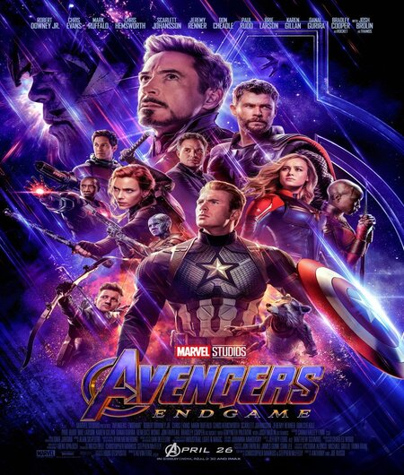

Vingadores-Ultimato
Classificação 12 anos - 2019 ‧ Ação/Ficção científica ‧ Duração 3h 2m
Após Thanos eliminar metade das criaturas vivas, os Vingadores têm de lidar com a perda de amigos e entes queridos. Com Tony Stark vagando perdido no espaço sem água e comida, Steve Rogers e Natasha Romanov lideram a resistência contra o titã louco.